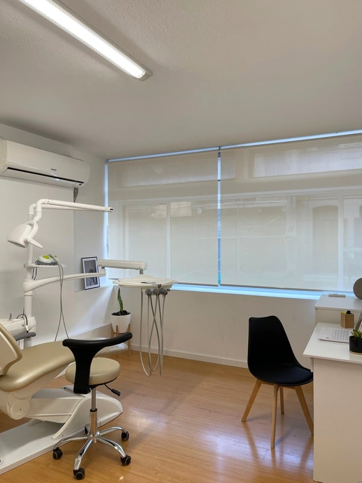

Un consultorio dental equipado con sillón, en Río Branco y 18 de Julio. Alquilás el turno que necesitás —todos los martes de tarde, todos los jueves de mañana— y ese horario queda a tu nombre.
Sin instalar un consultorio propio y sin pagar un alquiler mensual entero por los días que no atendés.

Lo que cuesta instalarse no es sólo el equipamiento: es sostener el alquiler todos los meses mientras armás tu agenda.
Si atendés dos tardes por semana, no tiene sentido pagar un consultorio los siete días. Alquilás el turno y el resto del tiempo el espacio no es tu problema.
El consultorio ya está montado y equipado. Llegás con tu instrumental y empezás a atender, sin adelantar el costo de armar un consultorio dental desde cero.
Empezás con un turno. Cuando se te llena, sumás horas sueltas desde la app o pasás a un segundo turno fijo. La estructura acompaña, no te adelanta.
El consultorio odontológico está listo para atender. Vos traés tu instrumental y tus pacientes; de la infraestructura nos ocupamos nosotras.
Río Branco y 18 de Julio
Montevideo, Centro
Una dirección fácil de indicarle a un paciente, en el eje por donde ya se mueve todo el mundo.
Lo que más nos consultan los odontólogos.
Sí, ese es justamente el modelo. Alquilás un turno fijo —una mañana o una tarde de un día concreto de la semana— y no pagás los días que no atendés. Si necesitás más, sumás horas sueltas desde la app.
Sí. El consultorio está equipado y listo para atender: llegás con tu instrumental y tus pacientes, y el resto ya está montado.
En Río Branco y 18 de Julio, pleno centro de Montevideo, conectado con las principales líneas de ómnibus y con estacionamientos en la zona. Es una dirección fácil de indicarle a un paciente.
Es el caso más común entre quienes alquilan acá. Instalar un consultorio propio exige una inversión inicial grande y un alquiler fijo mensual que hay que sostener desde el primer mes. Con un turno fijo empezás a atender con un costo acotado y vas ampliando a medida que crece tu agenda.
¿Buscás un consultorio para otra especialidad? Mirá todos los consultorios en alquiler →
Contanos qué días necesitás el consultorio odontológico y te pasamos la disponibilidad.
Escribinos por InstagramO escribinos a info@weclinic.uy